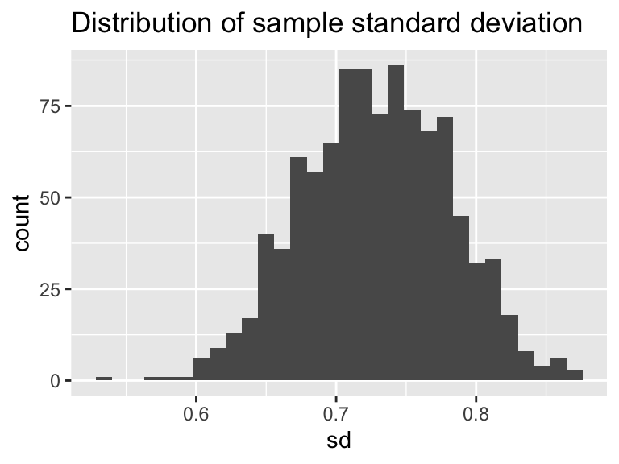
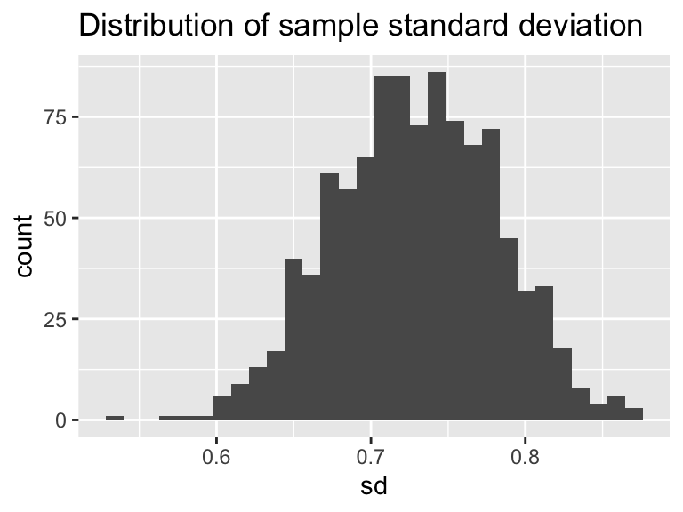

2.2 MCMC Parameter Estimation with a Differential Equation Model
Next let’s try parameter estimation with a differential equation model. What is different with a differential equation model is that we are given information about the solution, so we need to first numerically solve the differential equation for a given parameter set and then compute the likelihood.
The example that we are going to use relates to land use management, in particular a coupled system between a resource (such as a national park) and the amount of visitors it receives, such as the one described here. The tourism model relies on two non-dimensonal scaled variables, \(R\) which is the amount of the resource (as a percentage) and \(V\) the percentage of visitors that could visit (also as a percentage):
\[\begin{equation} \begin{cases} \frac{dR}{dt}&=R\cdot (1-R)-aV \\ \tag{2.2} \frac{dV}{dt}&=b\cdot V \cdot (R-V) \end{cases} \end{equation}\]
Equation (2.2) has two parameters \(a\) and \(b\), which relate to how the resource is used up as visitors come (\(a\)) and how as the visitors increase, word of mouth leads to a negative effect of it being too crowded (\(b\)).
For this case we are going to use a pre-defined dataset of the number of resources and visitors to a national park as shown in the original paper:| time | visitors | resources |
|---|---|---|
| 0.0000000 | 0.0016667 | 0.9950 |
| 0.2833333 | 0.0046667 | 0.9860 |
| 0.3980000 | 0.0083333 | 0.9750 |
| 0.4513333 | 0.0150000 | 0.9550 |
| 0.4933333 | 0.0230000 | 0.9310 |
| 0.6553333 | 0.0238333 | 0.9285 |
| 0.6640000 | 0.0263330 | 0.9210 |
| 0.7280000 | 0.0321667 | 0.9035 |
Figure 2.3 plotting these data we have the following:
Figure 2.3: Data on resources and visitors to a national park over time.
We can see that the data show as the visitors increase the percentage of the resources decrease. Perhaps from this limited dataset given we can estimate the parameters \(a\) and \(b\). We are going to assume that \(0 \leq a \leq 30\) and \(0 \leq b \leq 5\). We will need to implement this model in our code, which combines our knowledge of how we numerically solved differential equations in Section ??.
# Define the model applied:
tourism_model <- c(dRdt ~ resources*(1-resources)-a*visitors,
dVdt ~ b*visitors*(resources-visitors)
)
# Define the parameters that you will use with their bounds
tourism_param <- tibble(name = c("a","b"),
lower_bound = c(10,0),
upper_bound = c(30,5))
# Define the initial conditions
tourism_init = c(resources = 0.995, visitors = 0.00167)
deltaT <- .1 # timestep length
n_steps <- 15 # must be a number greater than 1
# Define the number of iterations
tourism_iter <- 1000
tourism_out <- mcmc_estimate(model = tourism_model,
data = parks,
parameters = tourism_param,
initial_condition = tourism_init,
deltaT = deltaT,
n_steps = n_steps,
iterations = tourism_iter,
mode = "de"
)Notice how mcmc_estimate has some additional arguments defining the initial conditions, \(\Delta t\), timesteps (n_steps). Most importantly is the option mode, which de stands for differential equation. (The default mode is emp, or empirical model - like the phosphorous data set.)
Visualizing the data also is done with mcmc_visualize:
mcmc_visualize(model = tourism_model,
data = parks,
mcmc_out = tourism_out,
mode = "de",
initial_condition = tourism_init,
deltaT = deltaT,
n_steps = n_steps
)## [1] "The parameter values at the optimized log likelihood:"
## # A tibble: 1 x 3
## l_hood a b
## <dbl> <dbl> <dbl>
## 1 -53.3 17.5 4.01
## [1] "The 95% confidence intervals for the parameters:"
## # A tibble: 3 x 3
## probs a b
## <chr> <dbl> <dbl>
## 1 2.5% 15.1 2.31
## 2 50% 19.6 3.79
## 3 97.5% 25.3 4.26## `stat_bin()` using `bins = 30`. Pick better value with `binwidth`.
## `stat_bin()` using `bins = 30`. Pick better value with `binwidth`. 

For this case there does not seem to be any association, as shown by the correlation coefficient between the two in the upper diagonal.